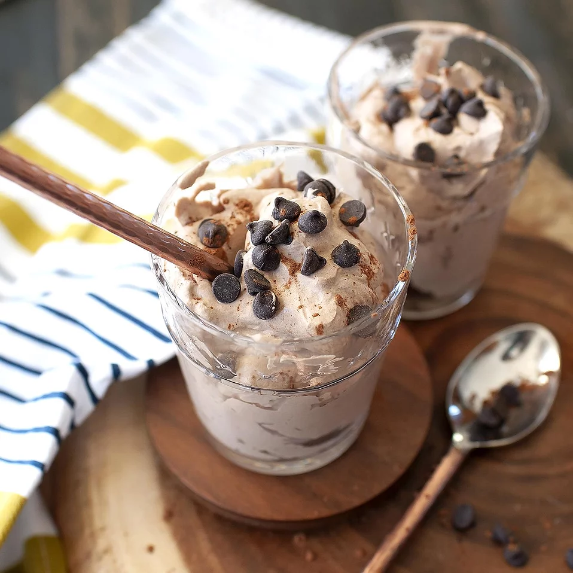

Keto Chocolate Mousse

A decadent, creamy dessert that's low in carbs and ready in minutes!
Ingredients:
- 1 cup heavy whipping cream
- 2 tablespoons unsweetened cocoa powder
- ½ teaspoon instant espresso powder
- ½ teaspoon almond extract
- 1 tablespoon stevia powder
- 1 pinch fine sea salt
- 2 tablespoons dark chocolate chips, or to taste (Optional)
Steps:
- Combine cream, cocoa powder, espresso powder
, almond extract, stevia, and sea salt in a large bowl.
Beat using an electric mixer until mixture is light and
fluffy and holds its form. Transfer to a serving bowl or
individual serving dishes.
- Serve sprinkled with chocolate chips plus additional cocoa
powder or espresso powder to taste.
Return to main page